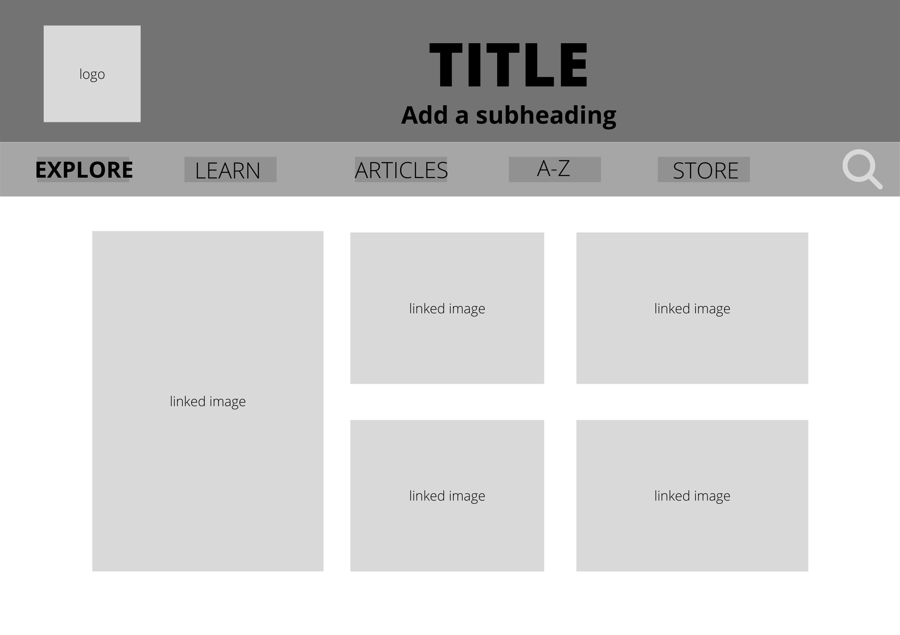
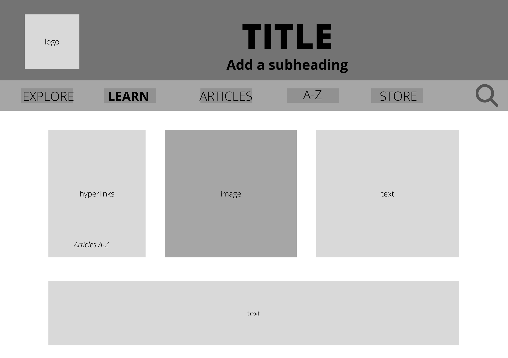
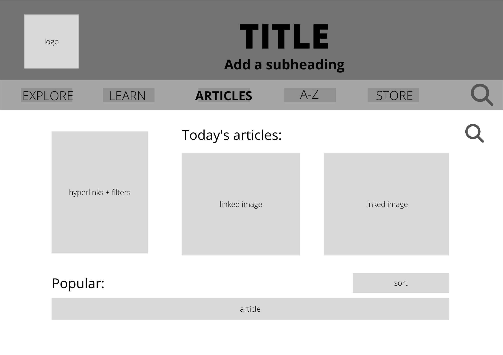
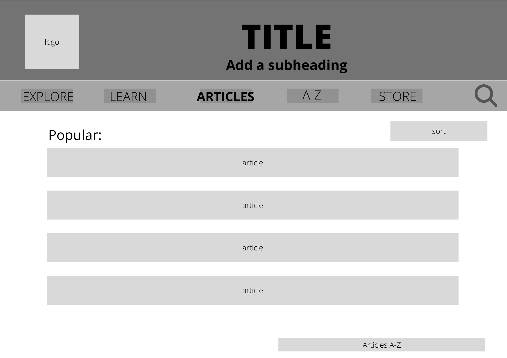
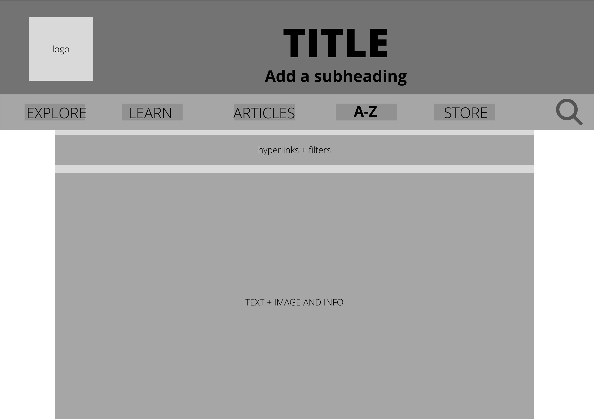
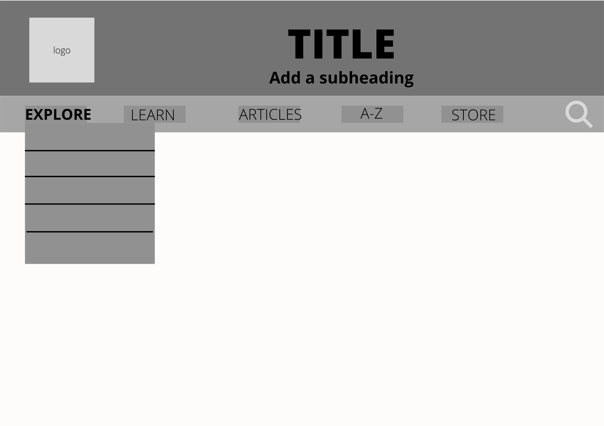

This site is an informational community site about dinosaurs. It is aimed towards younger people and people who have an interest in this topic. It gives basic information and there is a page where you can write and publish articles and you can read other people’s articles.
All of my code is completely original and my style sheet is well commented and organised. The overall look of the website is consistent throughout the pages and there is a lot of functionality in the website, such as the many anchor tags I used to make the page as responsive as possible. I thirty-eight in which I think is pretty cool.
These are the websites I used for images and copied information:
These are the sources for the images in the index “Explore” page: https://www.pinterest.com/pin/355995545515795990/ https://www.smithsonianmag.com/travel/want-to-dig-dinosaur-bones-join-pros-these-spots-180973138/ https://dinoanimals.com/dinosaurs/baryonyx/ http://markwitton-com.blogspot.com/2017/08/the-convention-of-shrink-wrapping.html https://www.science.org/content/article/sauropods-grew-big-munching-superfoods-sturdy-beaks
I used this site for inspiration for the “Explore” page https://kids.nationalgeographic.com/animals/prehistoric
I used this site for the images and copied brief description in the “A-Z dinos” page. https://www.activewild.com/list-of-dinosaurs-names-with-pictures/
I used this site for inspiration and images for the “Learn” page https://en.wikipedia.org/wiki/Dinosaur
Wireframe Diagrams
     Things I changed and why:
I replaced the store page with the about page as I needed an about page and the store would have been too hard. I ended up getting rid of the subtitle in the header as I thought the header looked better without it. I ended up changing the article page as I needed to use tables and the linked images were annoying to work with. I ended up using a table in A-Z as that made more sense and looked better. I originally planned to do a drop-down menu selection for the navigation but ran out of time to figure that out. Other than that I stuck quite closely to the original wireframe diagram.